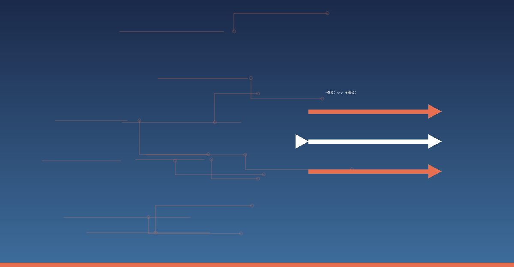

锂电池温度循环测试：标准规范与设备配置指南
温度循环是电池环境测试的主力项目，也是最容易因试验箱选错或测温布置不当而毁掉数据的项目。电芯在每个循环中反复胀缩，焊点、密封件和电极界面持续承受应力。本文讲清哪些标准规定循环、试验箱真正重要的是哪几个指标，以及哪些设置错误会悄悄污染循环数据。

温度循环对电芯做了什么
在 -40°C 到 +85°C 之间，电芯内部材料以不同速率改变尺寸：铝、铜、石墨、隔膜聚合物与卷芯各不相同的热膨胀系数，使焊点和粘接接头在每个循环中受力，反复循环可能在电极涂层中打开微裂纹、劣化隔膜-电极界面。因此该测试有两个目的：证明电芯能承受运输与存储极限（UN 38.3 T2、IEC 62133），以及加速老化机制以支撑寿命预测模型。
哪些标准规定了循环测试
UN 38.3 T2 是运输基线：-40°C 至 +75°C 循环10次、各保温30分钟，且转换速率需满足标准时限。IEC 62660-2 规定 EV 电芯的循环与高温耐久。GB 38031 在Pack级叠加温度循环与运行工况。UL 1642 与 IEC 62133-2 各有热滥用与循环变体。由于保温时间、变速率和判定标准都不同，务必依据目标市场适用的标准版本推导试验箱规格——满足 UN 38.3 的试验箱未必跑得动 15°C/min 的 EV 工况。
试验箱真正重要的三个指标
第一是升降温速率：标准箱为 3–5°C/min，快温变机型可达 10–15°C/min；必须以加载状态为准——满载夹具可使有效速率减半。第二是均匀性：工作体积内 ±2°C，才能保证1号电芯和48号电芯经历同一曲线；均匀性差的直接后果是任何统计方法都救不回的数据散布。第三是过冲控制：廉价控制器进入保温时过冲 5°C，在高温端可能把电芯推出标准意图的限值。
以保温控制为先的循环测试，优先选单箱强垂直气流方案；以原始变速率为先时，双箱（热/冷）提篮式方案更优。
测电芯，不是测空气
最常见的测试错误是记录箱内空气温度并称之为电芯温度。快速变温时电芯表面温度滞后空气温度数分钟，在多电芯夹具深处滞后更大。应将热电偶直接固定在代表性电芯上、以至少1 Hz 记录，把箱温作为辅助通道。对用于寿命建模的循环项目，还需按计划采样电芯电压，并全程记录每个循环的容量抽检，否则退化曲线在最关键处失去分辨率。
污染循环数据的典型陷阱
凝露是经典问题：穿越露点且环境湿度高时，冷水表面会结水，导致绝缘电阻漂移，严重时产生被误判为老化的腐蚀。夹具同样重要——刚性钢夹具给电芯预加载热应力，会诱发产品在服役中根本不会出现的失效；应使用柔性材料或弹簧触点。此外，长期循环项目中手动除霜模式的试验箱会悄悄推高湿度。
配置清单
- ✓以实际夹具加载状态确认升降温速率，不以铭牌数据为准。
- ✓每年在加载状态下复测均匀性分布。
- ✓热电偶固定在电芯而非夹具壁上，记录频率 ≥1 Hz。
- ✓穿越露点时使用干燥空气或氮气吹扫。
- ✓开跑前验证保温控制精度在设定值 ±2°C 以内。